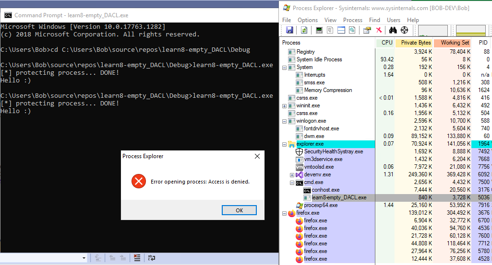

# Empty DACL
Source:
https://stackoverflow.com/questions/6185975/prevent-user-process-from-being-killed-with-end-process-from-process-explorerIn the Windows access control model, if a DACL exists but contains no matching ACE,
access is implicitly denied.
Therefore, you can protect your process by creating an empty DACL.
This prevents non-Administrative users from terminating your process.
## Status as of Windows 10 1809
It seems to work.
You can run and protect your .exe without needing Administrator privileges.
It prevents normal users from terminating the process, but Administrators from an Administrator task manager can terminate the process. (as Administrator, task manager opens as Admin by default).
## Notes
MSDN says
SetSecurityInfo needs
SE_SECURITY_NAME privilege (
SeSecurityPrivilege) to be able to change the SACL of an object. So you might need to run an enablePrivilge function first to enable
SE_SECURITY_NAME.
• The process requires
SeSecurityPrivilege (might or might not be a bother)
## Demo
• Windows 10 1809
Upon attempting to terminate the process, we get an
Access is denied error.
## Code
#include <stdio.h>
#include <Windows.h>
#include <AclAPI.h>
int protectProcess()
{
BOOL bRet;
DWORD dwRet;
// creat empty DACL
PACL pEmptyDACL = (PACL)malloc(sizeof(ACL));
bRet = InitializeAcl(pEmptyDACL, sizeof(ACL), ACL_REVISION);
if (bRet == FALSE)
{
fprintf(stderr, "[error] failed to initialise a new ACL structure: %d \n", GetLastError());
return 1;
}
HANDLE hProcess = GetCurrentProcess();
dwRet = SetSecurityInfo(hProcess, SE_KERNEL_OBJECT, DACL_SECURITY_INFORMATION, NULL, NULL, pEmptyDACL, NULL);
if (dwRet != ERROR_SUCCESS)
{
fprintf(stderr, "[error] failed to set SACL of process: %d \n", GetLastError());
return 1;
}
free(pEmptyDACL);
return 0;
}
int main()
{
printf("[*] protecting process... ");
if (protectProcess() != 0)
return 1;
printf("DONE! \n");
printf("Hello :) \n");
getchar();
return 0;
}